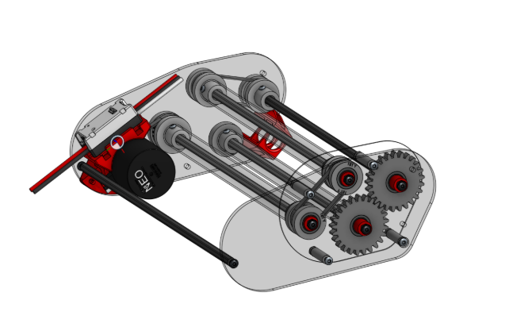

Robot Mechanism
Conveyor System
A mechanical conveyor system designed to help score points during a robotics competition.
The Problem
The goal was to create a small autonomous boat capable of navigating a pool without direct manual control. The system needed to combine mechanical design, electronics, sensing, and control logic into one working prototype. The goal was to design and integrate a conveyor system into a robot to help score points during a robotics competition. The system needed to combine mechanical design, electronics, sensing, and control logic into one working prototype.
My Approach
I designed and modeled mechanical components in SolidWorks, fabricated parts using 3D printing, and integrated the mechanical system with an ESP32, motor controller, IMU, OLED display, and power system.
Navigation & Controls
The navigation system used ArUco tags for visual positioning and IMU heading data to determine orientation. A finite-state machine organized the boat's behavior into distinct navigation states.
Design Iteration
Add your best example of an iteration here: what failed, what you changed, and why the new design worked better. This is one of the most valuable parts of a student engineering portfolio.

Result
Mechanism was successfully integrated into the robot and helped score points during the competition, with < 1% failure rate during the competition.
What I Learned
Briefly explain one or two engineering lessons from the project—especially something that changed how you approach design, testing, or troubleshooting.